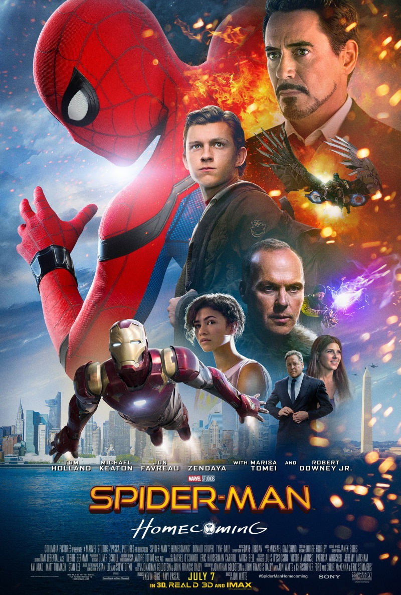

«Людина-павук: Повернення додому» (англ. Spider-Man: Homecoming) — американський супергеройський екшн про Людину-павука, персонажа коміксів видавництва Marvel Comics, спродюсований Marvel Studios і Columbia Pictures, спільно з Sony Pictures Entertainment як дистриб'ютором. Прем'єра «Людини-павука: Повернення додому» в Україні відбулася 6 липня 2017. Випуск сиквелу запланований на 5 липня 2019.

Після розгрому армії чужопланетян чітаурі в Нью-Йорку Адріан Тумс керує добуванням технології прибульців. Але це завдання перебирає на себе Stark Industries, лишаючи Тумса разом з його підлеглими без роботи. Він забирає вже добуті пристрої та переконує співробітників зробити зі знахідок зброю, котру потім продавати на чорному ринку. 5 років по тому Тоні Старк бере на стажування юнака Пітера Паркера, що після укусу павука-мутанта набув надлюдських здібностей. Допомігши Старку влагодити конфлікт серед супергероїв «Месників», Пітер сподівається, що скоро рятуватиме світ. Він вирушає до Німеччини в супроводі Гепі Гоґана, водія Старка. Там Тоні повідомляє свій висновок: Паркер ще не готовий бути «Месником», йому варто повернутися в Квінзі, де продовжити навчання в школі. Та юнак все ж отримує костюм супергероя від Stark Industries з обмеженим функціоналом. Пітер мріє стати справжнім супергероєм, тож в костюмі Людини-павука вирішує розшукувати злочинців у рідному місті. Проте його допомога або виявляється незначною, або призводить до комічних ситуацій. Його шкільний товариш Нед захоплюється пригодами «Месників» і прагне познайомитися з ними. Він думає, що коли Паркер розповість про своє стажування і знайомства з «Месниками», з них обох перестануть глузувати однокласники. Зокрема з них насміхається Флеш Томпсон. Паркеру в цей час сподобалася однокласниця Ліз, але він соромиться сказати їй про це. Тим часом Адріан налагодив виробництво зброї, а собі виготовив крилатий костюм, ставши Стерв'ятником. Пітер бачить як грабіжники з використанням такої зброї викрадають гроші з банку. Юнак вирішує зупинити їх, та в ході бою постріл з антигравітаційної гармати руйнує сусіднє кафе, а грабіжники тікають. Інцидент потрапляє на записи відеокамер, наступного дня все Квінзі знає про Людину-павука. Нед приходить додому до Пітера, позаяк вони домовилися разом збирати конструктор LEGO. Він бачить як Паркер в костюмі залазить у свою кімнату. Друзі домовляються, що Нед не розкриватиме нікому особу Людини-павука, втім той надокучає самому Паркеру питаннями про супергеройське життя. Школярі влаштовують вечірку, Нед вмовляє Пітера прийти туди в образі Людини-павука, та Паркер вагається. Він знову бачить грабіжників, які продають зброю, і вирушає навздогін. Людині-павуку майже вдається зупинити втікачів, але раптом його схоплює Стерв'ятник і скидає у річку. Тоні Старк завдяки вбудованому в костюм трекеру дізнається про це та присилає дистанційно керований костюм, який витягує юнака. Старк запевняє його, що Паркер не готовий бути супергероєм і все, що зараз варто робити — це дрібна допомога містянам. Людина-павук вважає, що його недооцінюють, він знаходить чужопланетний пристрій, загублений грабіжниками, і забирає його з метою вислідкувати лиходіїв. Брайс, який продає зброю, погрожує покинути банду Стерв'ятника та видати його. Стерв'ятник випадково вбиває Брайса і назначає замість нього Шульца. Пристрій чітаурі розшукує Шульц і приходить до школи, де вчиться Пітер. Паркер завдяки причепленому до Шульца жучку відслідковує, що банда прямує в Меріленд, який неподалік Вашингтона. Щоб схопити їх, Пітер вирушає з однокласниками на олімпіаду до Вашингтона. Нед і Паркер відключають трекер Старка, імплантований в костюм Людини-павука, тим самим розблокувавши всі його функції. Паркер знаходить лігво злочинців, але не може впоратися з усіма функціями костюма. Через це він опиняється замкненим в контейнері, де бачить такий самий чужопланетний пристрій, як той, що лишився в Неда. Штучний інтелект костюма повідомляє — це джерело живлення, що може вибухнути. Зрозумівши, що Неду і всім навколо загрожує небезпека, Людина-павук поспішає до Вашингтона. Джерело живлення активізується, коли школярі піднімаються ліфтом у монументі Вашингтона. Урядовий гелікоптер намагається зупинити Людину-павука, та Паркеру все ж вдається врятувати ліфт від падіння і всіх у ньому, зокрема Неда й Ліз. Тим часом торговці зброєю відпливають на поромі. Паркер наздоганяє їх, але в ході бійки несправна зброя розрізає пором навпіл. Паркер утримує частини судна павутиною, поки не прилітає Старк у костюмі Залізної людини і не рятує пасажирів. Старк сварить Паркера за нерозсудливість і забирає в нього костюм зі словами, що коли той не здатний на героїзм без костюма, то він не гідний його носити. Паркер повертається до звичайного шкільного життя, він наважується розповісти Ліз про свої почуття і вона відповідає взаємністю. Ліз запрошує його піти з нею на випускний бал. Обох підвозить до школи батько Ліз і Пітер впізнає в ньому Адріана Тумса. Той здогадується — Пітер і є людина-павук. Тумс розповідає, що торгує зброєю задля благополуччя родини, тому обіцяє не шкодити Пітеру і його стосункам з Ліз, якщо той не заважатиме торгівлі. Розриваючись між почуттями до Ліз і прагненням покарати її батька, Пітер тікає з випускного. Злочинці намагаються його затримати, коли старий, саморобний, костюм Людини-павука ще не вдягнений до кінця. Нед знерухомлює нападника пускачем павутини та телефонує за допомогою до Геппі, проте той не звертає уваги. Зрештою Людина-павук сходиться зі Стерв'ятником у його лігві. Стерв'ятник атакує Пітера своїми крилами, стинає бетонні опори й завалює юнака уламками. Паркер лишається безпорадним, але згадує слова Тоні Старка та знаходить в собі сили вибратися з-під завалу. Людина-павук наздоганяє Стерв'ятника, коли той залазить на літак Stark Industries, звідки зі спільниками замислив викрасти передові розробки: зброя, реактори холодного синтезу й екзоскелети. В бою зі Стерв'ятником літак пошкоджується, внаслідок чого падає. Стерв'ятником долає Людину-павука, після чого забирає вантажі. Та його костюм виявляється несправним, Тумс зазнає аварії, тоді Пітер рятує його, лишивши для поліції, обплутаним павутинням. Пітер вибачається перед Ліз за втечу з випускного. Дівчина пригнічена через арешт батька і переїзд до іншого штату, та нічого не знає про стосунок Паркера до цього. До школи приїжджає Геппі, маючи запрошення від Тоні Старка. Тоні хвалить Пітера та обіцяє згодом взяти Людину-павука в «Месники», демонструючи новий костюм. Однак Пітер відмовляється, щоб захищати простих людей в рідному місті. Повернувшись додому, він бачить, що Старк повернув старий костюм. У цю мить його в образі супергероя бачить тітка.
У травні 2017, огляд компанії Fandango зазначив, що «Повернення додому» був другим найочікуванішим літнім блокбастером
«Людина-павук: Повернення додому» (2017)
«Месники: Війна нескінченності» (2018)
«Людина-павук: Далеко від дому» (2019)